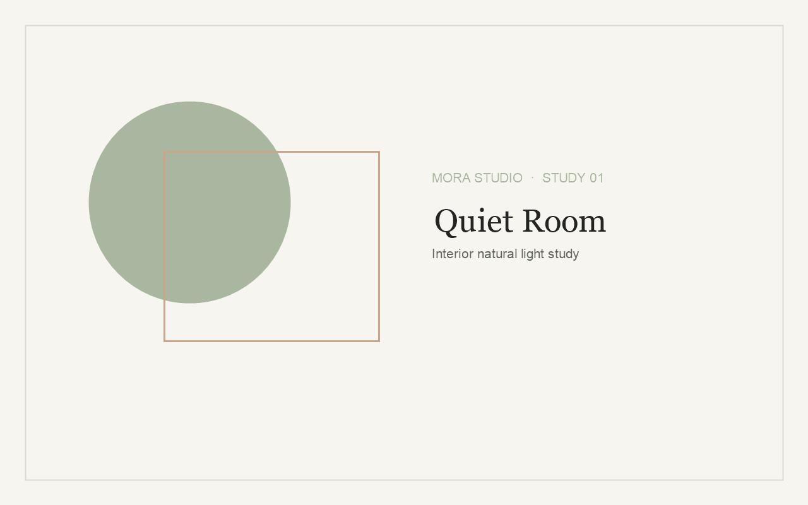
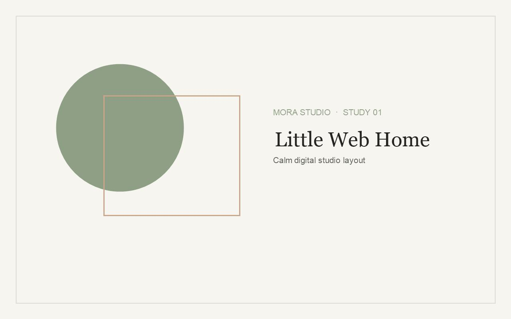

Interior Concept
Quiet Room
A calm interior study focusing on soft natural window light, warm wood tones, unbleached linen and uncluttered spaces.
A personal design journal exploring websites, objects, interiors, crafts and stories through a calm Norwegian minimalist lens.

A calm interior study focusing on soft natural window light, warm wood tones, unbleached linen and uncluttered spaces.

Exploring how a single sheet of heavy paper or fabric can fold into a sturdy, tactile vessel without adhesives.

A calm website concept designed for small creative ateliers, emphasizing clarity, quiet typography and breathing room.
At the edge of the fjord stood a wooden house whose white walls quietly remembered the amber of late October afternoons and the pale blue hush of December mornings.
A well-built chair asks for very little. Placed beside a window, it simply waits, watching leaves change from green to rust as the seasonal light shifts across the floorboards.